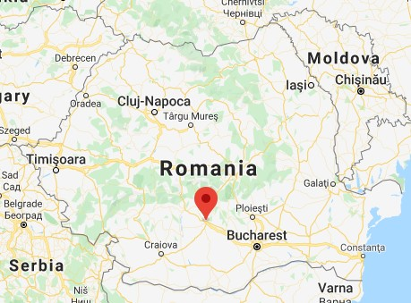

Pitești (Питешти) is a city in Romania, located on the Argeș River (Арджеш). The capital and largest city of Argeș County, it is an important commercial and industrial center, as well as the home of two universities. Pitești is situated in the historical region of Muntenia. It lies on the A1 freeway connecting the city directly to the national capital Bucharest, being an important railway junction, with a classification yard in nearby Bălilești. The city houses the Arpechim oil refinery, and is a marketing center for the automotive industry, in particular Automobile Dacia.
The city is part of the historical region of Wallachia, situated in its north and in the westernmost part of its Muntenian subregion. It lies on the right bank of the Argeș, where the river meets its tributary, Râul Doamnei.
Here are some of the sister/twin cities Pitești has:
- Borlänge (Sweden)
- Bydgoszcz (Poland)
- Caserta (Italy)
- Springhfield, Ohio (USA)
Pitești is situated 280 metres (918.64 feet) above sea level, on terraces formed by the Argeș, and belongs to the southernmost section of the Getic Plateau (an area of foothills leading up to the Southern Carpathians).The Plateau is at its narrowest in the Pitești area, where it only reaches 30 km (19 miles) in width, as opposed to the 70–80 km (43–50 miles) average.The city has access to a piedmont plain, known as Câmpia Piteștilor ("Pitești Plain") and characterized by water-meadows.To the west, it abuts the Trivale Forest, which has been partly set up as a leisure park.
Pitești is adjacent to two reservoirs on the Argeș, in its Prundu area and in nearby Bascov (the Budeasa Dam).It is situated downstream from Lake Vidraru and upstream from the reservoir in Bălilești.
Pitești is one of the most industrialized cities in Romania. It is the center of the automotive industry in the country: the Automobile Dacia automaker is situated in the nearby town of Mioveni, and several other automobile parts manufacturers are located within its urban area (Dräxlmaier Group, Lear Corporation and Valeo). The city also houses the Arpechim oil refinery, part of the Petrom group. The plant, established as a state-owned company during communism, has traditionally been the center of controversy over its air pollution records. In 2007, the Ministry of the Environment withdrew Arpechim's permit, but Petrom contested the decision in court.The plant is scheduled to gradually reduce its activity over a period of several years, pending eventual closure.